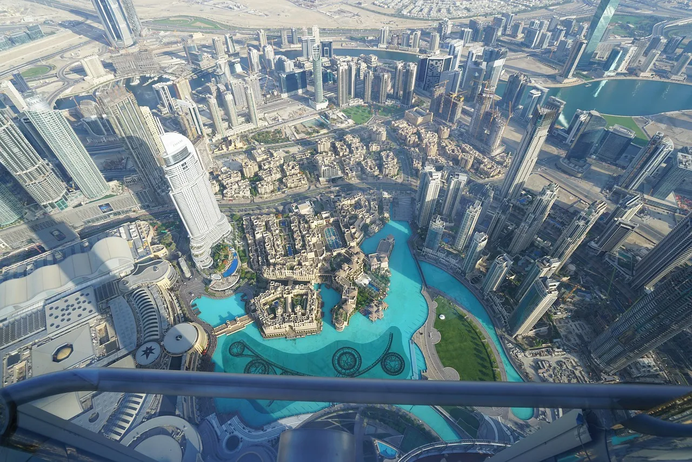

都市の誇りと歴史が息づく、
優美な美しさを放つランドマークたち
東京タワー：洗練の朱、東京の背骨。
日本の高度経済成長の象徴であり、今もなお東京の街を温かく照らし続ける伝統の電波塔。1958年の誕生以来、その洗練されたトラス構造と鮮やかなインターナショナルオレンジの色彩は、東京のランドマークとして愛され続けています。夜になると、温かみのあるオレンジ色のライトアップが都会の夜景の中に浮かび上がり、どこかノスタルジックでロマンチックな雰囲気を演出します。展望台からは富士山や大都会を一望でき、昭和のレトロな風情と最先端のカルチャーが融合した、日本が世界に誇る不朽の名作タワーです。
エッフェル塔：パリに咲いた芸術の頂
「鉄の貴婦人」の名にふさわしい、世界のタワーの原点にして最高峰の美しさを誇るパリの象徴。1889年のパリ万国博覧会のために建設されたこの塔は、レースのように繊細に組み上げられた錬鉄の骨組みが、見る者を圧倒する優美な曲線を描いています。昼間は青空に映えるブロンズのシルエットが美しく、夜には黄金色のライトアップとともに、毎正時にきらめく「ダイヤモンド・フラッシュ」がパリの夜を魔法のように彩ります。その佇まいは、単なる建造物の枠を超え、世界中の人々を魅了し続ける芸術作品そのものです。
ブルジュ・ハリファ：天を貫く、世界一の輝き
近未来的なSFの世界を具現化したような、高さ828メートルを誇る人類史上最高峰の超高層建築物。イスラム建築の幾何学模様と、砂漠に咲くヒメノカリスの花から着想を得たというデザインは、天に向かって細くなっていくシャープで美しい螺旋状のフォルムが特徴です。全面を覆うガラスパネルがアラビアの強い太陽光を反射し、未来的な輝きを放ちます。夜にはタワー全体が巨大なLEDスクリーンと化し、光と音が織りなす大迫力のエンターテインメントショーが繰り広げられるなど、ドバイの富とテクノロジーを象徴する最高峰のタワーです。
